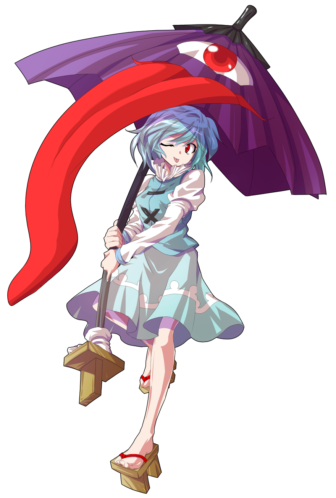
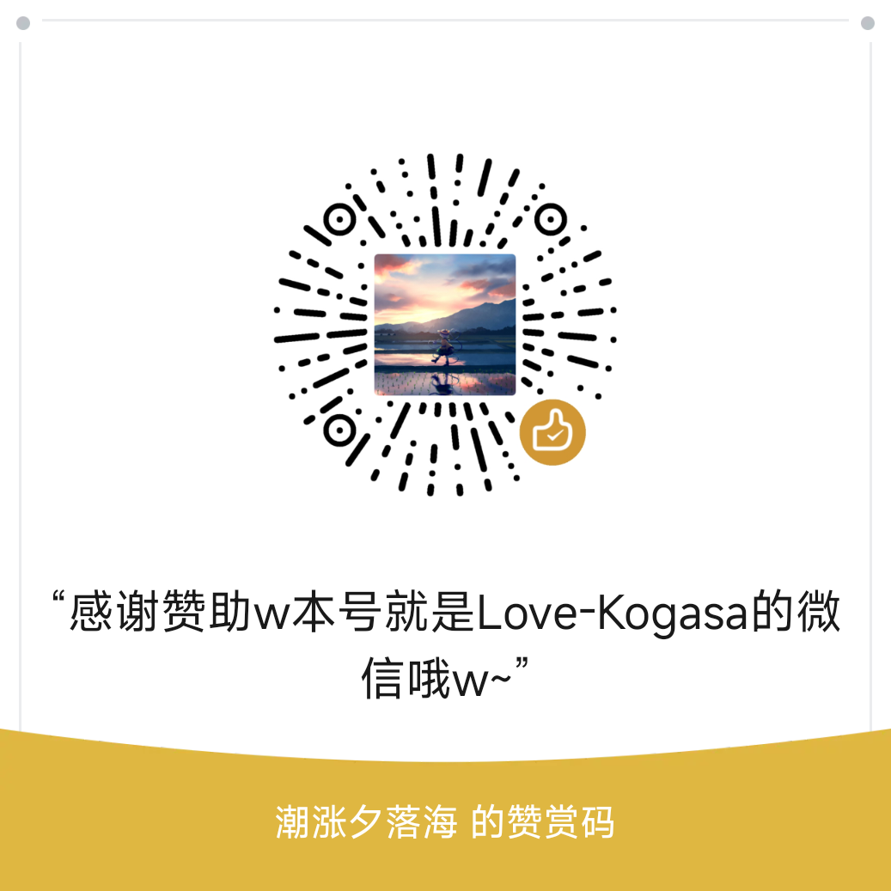

外界通往幻想乡的邮箱 awa，通过邮箱向你喜欢的幻想乡角色发送邮件吧！
图标: Pixiv 110969269 by 那奈はな
反馈邮箱: 1983997053@qq.com
吐槽: 我代码写得跟屎一样啊... 有时间再重构吧
特别感谢 MTR 提供市场 API 支持
本页已被查看了 次
灵梦被拍了 拍打灵梦查看 次 awa
小伞被拍了 拍打小伞查看 次 awa
控制台(终端样式)，你可以在这里找到一些错误
主要用于调试

页面作者为: @love-kogasa
我的新博客 → Love-Kogasa
